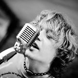
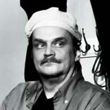

|
|
Клуб Blues.Ru | Гастроли | Команда
Страна должна знать своих героев!
Делает blues.ru, любит слушать музыку, играет на гитаре. Отвечает своей головой
за гастроли, ездит на фестивали, организует концерты, дружит вживую и по переписке
с хорошими музыкантами, принимает, возит их на машине, пишет пресс-релизы.
+7-903-6841530, fedor@blues.ru
Журналист, специалист по Норвегии, бывает там несколько раз в месяц, часто -
на фестивалях, свободно говорит по-норвежски. Света очень любит классных музыкантов,
без ее энтузиазма не случились бы первые гастроли Бюска, и не образовалось бы заряда
на остальной список. Света решает практические оргвопросы и качественно протусовывает
приезжающих. Света - лучший пример волонтера, который из исключительно корыстных
соображений (куча удовольствия) пашет много лет на благо сотен блюзовых фанатиков.
Крутой блюзовый гитарист, маэстро музыкального вкуса, понимает все в гитарах,
усилителях, Хаммондах и исполнении хорошей музыки. Скоро 20 лет как друг и сообщник Федора во
всех начинаниях. Ездит на фестивали, не пропускает хорошие концерты и пластинки.
Главный не слабак клуба, вкалывает во время гастролей, круто ездит на такси,
качественно тусует и расквашивает хороших музыкантов до утра.
Наш друг Костя - меломан и даже гитарист, в последние годы соучастник всех наших
блюзовых авантюр - от гастролей до поездок за блюзом на Шпицберген. Он редким образом
сочетает в себе два качества, которые оба так нужны, когда нужно что-то замутить.
Костя не только хочет, но и может! И не только может, но и хочет! Он все умеет и у него есть
все, что нужно. Главное, на Костю можно положиться в любой ситуации: когда требуется
тонкий музыкальный вкус или ремонт карбюратора.

Гитарист-главарь звездной группы The Jumping Cats, через которую распространяет
наше дурное музыкальное влияние после отъезда гастролеров. Активный соучастник всех
наших мероприятий, круто возит комбики на машине, сам привозит солистов для
выступления с Jumping Cats.
Босс, глава Дома у Дороги, клуба, который почти с самого начала списка был домом
для всех гастролей. ЮрИваныч находит публику нам на концерты, предоставляет сцену,
потом еще кормит-поит музыкантов, а после дает денег. Его добрые глаза, трезвый
рассудок и твердая рука позволяют нам чувствовать себя комфортно, но не отрываться
от суровой бизнес-реальности.

Гуру и монстр российской блюзовой журналистики, главный редактор Блюз.Ру и
радиоведущий Эхо Москвы, помогает придавать нашим маргинальным мероприятиям
медийность и лоск респектабельности.
Самый четкий промоутер современности, живет во Владимире. Ответственнен за почти
все выезды наших артистов за пределы МКАД. Лидер местной блюзовой тусовки,
сделал в 2000-е Владимир блюзовой столицей, не раз утеревшей нос московской публике.
Обожает и коллекционирует музыку, в доэмпэтри эпоху снабжал нас болванками с
редким блюзом, часть из которых печатал самостоятельно. Тот самый герой,
что на всех наших концертах стоически стоит с камерой, а потом дарит нам
чудесные видео-бутлеги-воспоминания. Увлечение записью блюзовых концертов у Вадика
превратилось в профессию оператора.
Огромное спасибо всем нашим друзьям, которые помогают и, главное, не пропускают концерты, без этого ничего не получается.
Товарищ, если тебе все это нравится, присоединяйся! Ты тоже можешь что-нибудь сделать, а потом еще и потусоваться. Будет весело, а когда все уедут, тебе гарантировано глубочайшее удовлетворение от вклада в классную движуху. Тоже хочешь? Спроси меня, как! - fedor@blues.ru